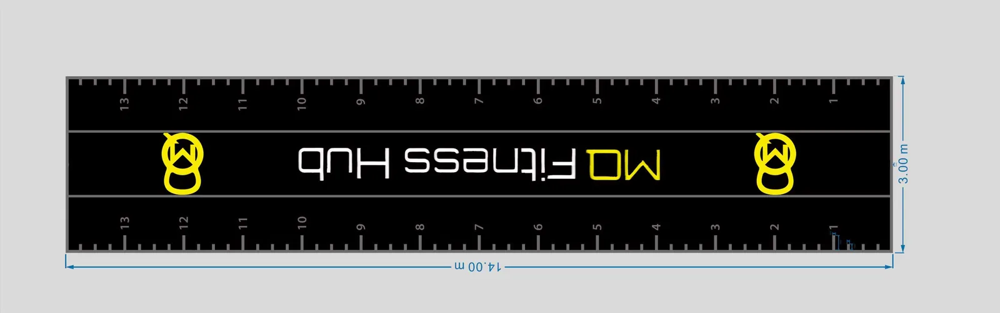
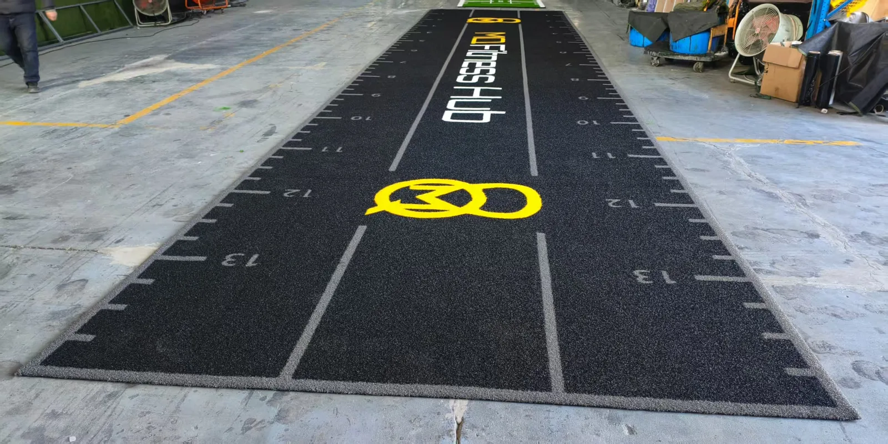
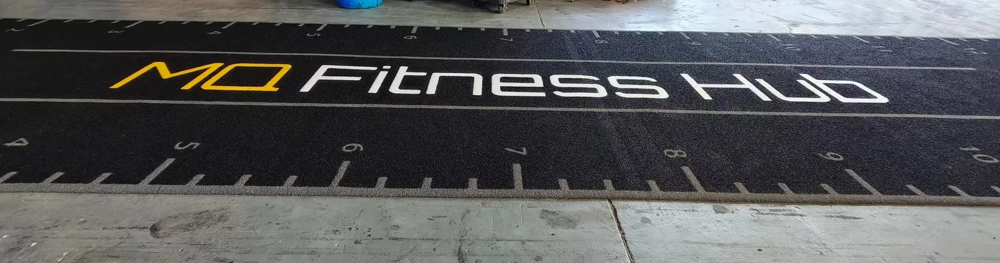
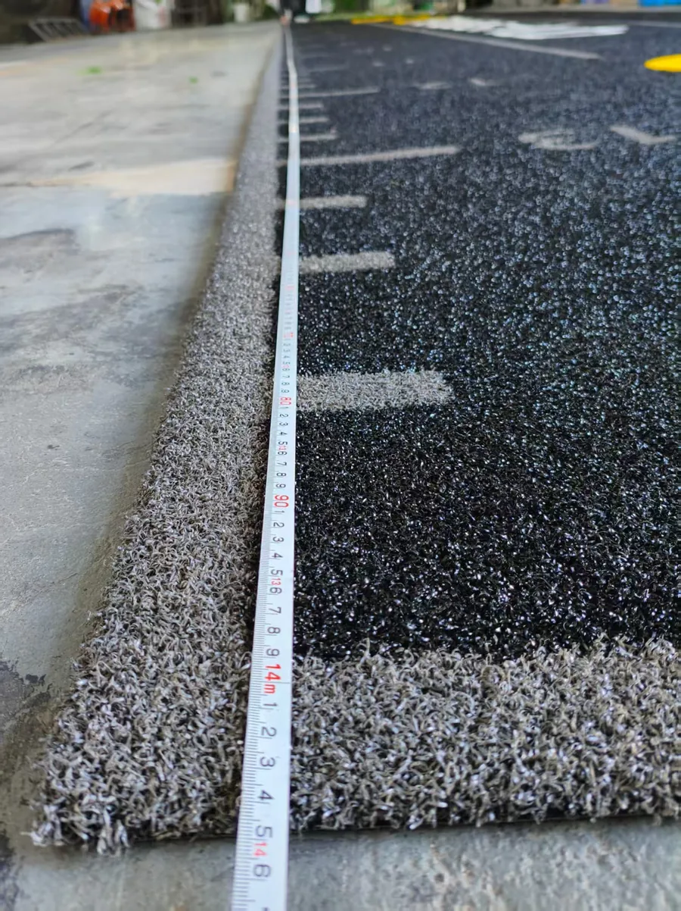
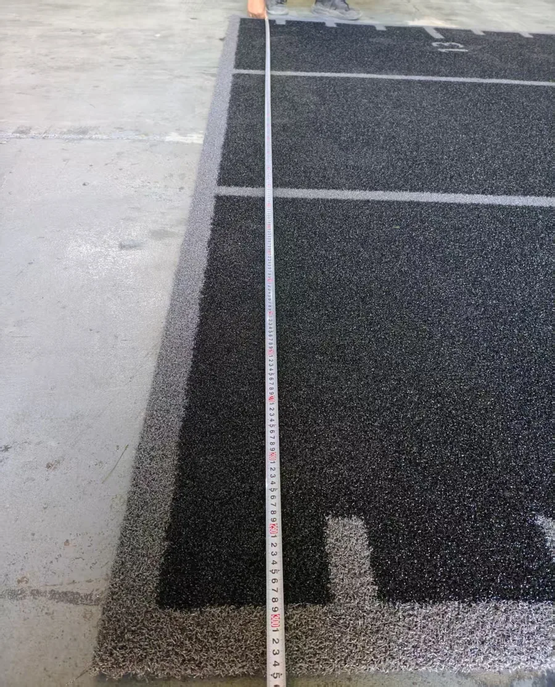
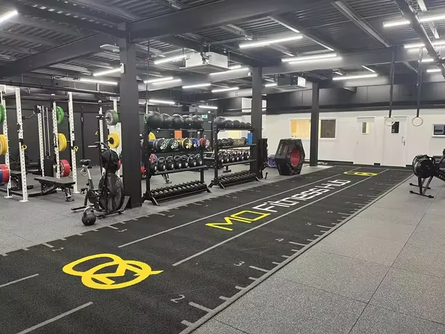
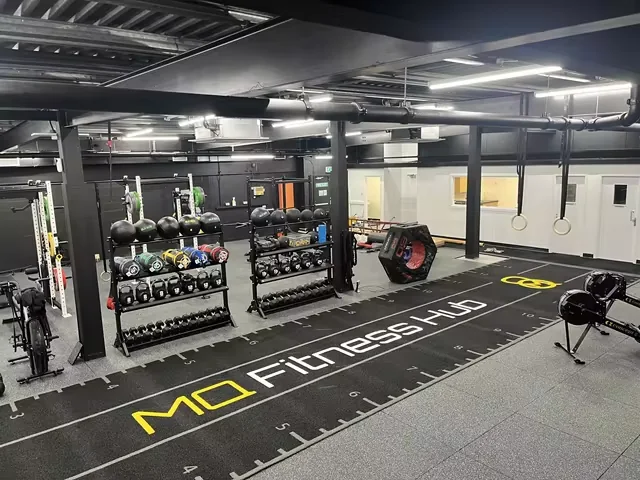
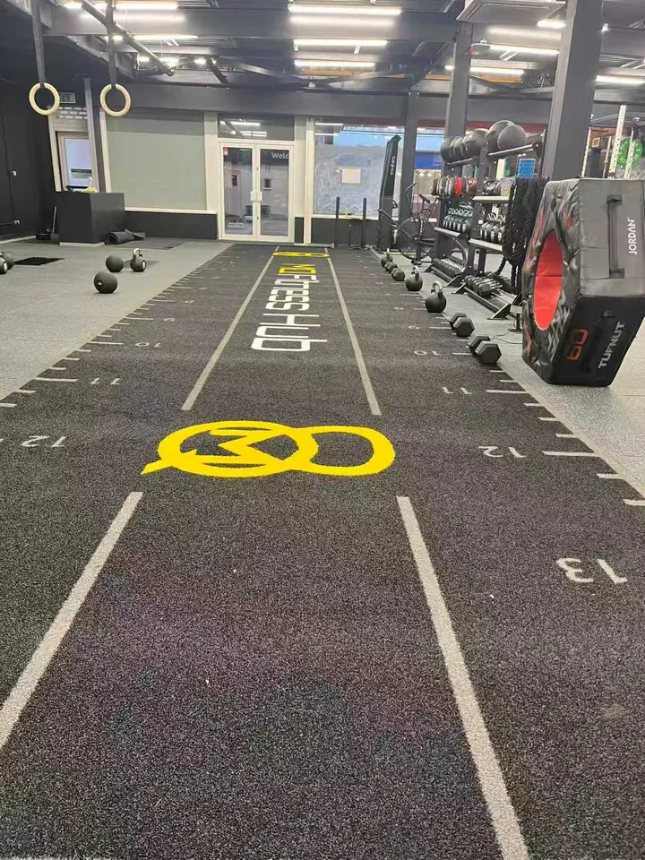
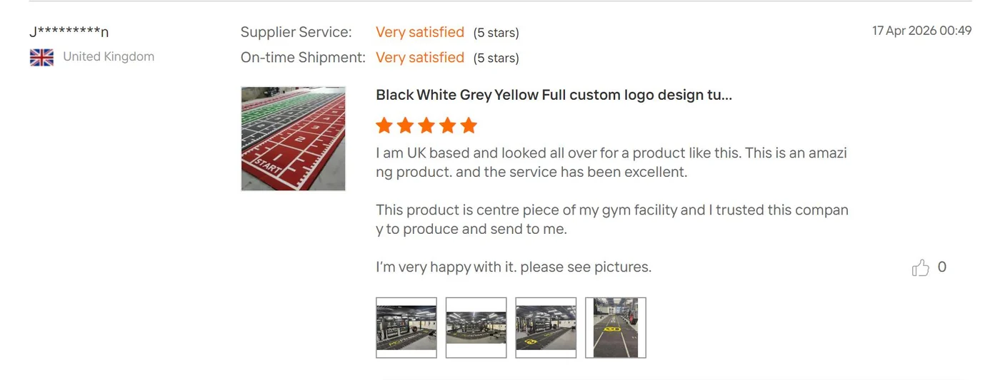
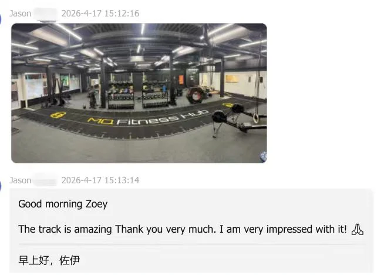

Project Answer in Brief
Yes, a gym turf track can be produced as a 3m-wide branded training zone. This UK project measured 14m × 3m and used a black base with grey boundaries, white brand lettering, numbered distance markings and yellow woven logos. UMAX documented the approved artwork and finished dimensions; the customer then managed installation inside the fitness hub.
| Destination | United Kingdom |
|---|---|
| Finished size | 14m × 3m |
| Application | Commercial functional training and sprint track |
| Color direction | Black turf with grey, white and yellow graphics |
| Product reference | UMAX GYMXM15 |
| Yarn and pile | 100% PE; 15mm nominal original pile; approximately 10–12mm visible after crimping |
| Construction | 5,500 dtex with PP + SBR backing |
| Branding method | Woven logos, lettering, lane lines and distance markings |
| Installation | Managed locally by the customer |
From Scaled Mockup to a 3m-Wide Branded Track
The starting point was not a generic black turf roll. It was a dimensioned layout showing the full 14m length, 3m width, center lettering, end logos, grey lane boundaries and number direction. For custom gym turf with a logo, this design stage is where a buyer confirms how the artwork will read from the main entrance and how the training marks will work in daily sessions.
A 3m width created one complete visual training zone across the available floor. That made the brand feel integrated into the gym rather than added as a small decoration. However, a wide piece also affects roll handling, door access, unloading and the number of installers needed. Future buyers should approve the width only after checking the route from delivery vehicle to final floor.

Woven Branding and Factory Dimension Checks
The customer name, yellow logos, grey boundaries and distance marks were machine-woven into the custom turf construction. This method allowed the branded graphics and training references to form part of the finished surface instead of relying on removable signs around the lane.
Factory photographs recorded the complete black gym turf track before packing. Separate tape-measure images documented the 14m length and 3m width. Those checks are especially useful for a custom gym turf supplier because the approved artwork, manufactured graphics and physical dimensions can be compared before the roll leaves the factory.




Installed as the Centerpiece of the Functional Training Area
After local installation, the black training turf aligned with the surrounding rubber flooring, racks, kettlebells and conditioning equipment. The yellow and white brand elements remained visible across the room, while the numbered edges could support carries, sprints, lunges and other distance-based functional training.


What This UK Project Proves—and What It Does Not
This project provides physical evidence that black commercial gym turf can be manufactured as a 14m × 3m branded surface with woven logos and custom lane markings. It also shows how a wide track can connect strength, conditioning and sprint work inside one functional training area. For a gym owner, designer or equipment buyer, the useful reference is the complete sequence: dimensioned artwork, finished factory layout, tape-measure checks and installed customer photographs.
It does not mean that 14m × 3m is the right specification for every UK gym. Room proportions, fire routes, floor transitions, equipment spacing and local access still control the final size. A narrower roll plan may be easier to handle in an existing building, while a wider piece may reduce visual interruptions in an open facility. The decision should follow a measured floor plan and installation route.
The case also avoids turning one installed result into a universal durability or sled-resistance claim. A buyer should confirm the intended sled, load, training frequency, substrate and maintenance routine. Those inputs matter alongside the turf construction and should be reviewed before approving a sample or production specification.

17.6-second customer-site video. The MP4 is not requested until the play button is selected.
Customer Evidence After Installation
“This product is centre piece of my gym facility… I’m very happy with it.”Five-star customer review, United Kingdom · displayed with permission
The review and direct customer message connect the installed photographs to the buyer’s own assessment. They are presented as project evidence only. This page does not publish Review, AggregateRating, Product, Offer, price or stock structured data.


What the GYMXM15 Reference Means
This case follows the UMAX GYMXM15 reference direction: 100% PE yarn, 5,500 dtex, PP + SBR backing and a nominal original pile height of 15mm. Because the yarn is textured and crimped, the relaxed visible height is approximately 10–12mm. The gym turf pile-height guide explains why visible height should not be confused with the nominal production specification.
Pile height alone does not predict sled resistance or long-term behavior. Sled construction, load, fiber direction, backing, adhesive, subfloor and maintenance all influence the installed result. Buyers with a critical sled push or sled pull requirement should test a representative sample using the intended equipment.
Planning Another Custom Branded Gym Track
UMAX currently accepts one custom unit for the Custom Gym Turf product direction. A digital mockup is normally prepared within 1–2 business days after the buyer supplies complete dimensions, usable logo artwork, colors and viewing direction. Production timing is confirmed by sales for the actual size, quantity and delivery requirement.
Before requesting a 3m-wide gym turf roll, send:
- the exact finished track and room dimensions;
- a vector logo plus Pantone or other color references;
- the required number sequence, lane lines and reading direction;
- door, corridor, lift and unloading restrictions;
- subfloor information and the local installation plan;
- the delivery destination and target opening date.
For layout preparation, see the custom gym turf with logo design process. For training-zone and sled planning, use the commercial gym sled track guide.
Frequently Asked Questions
Can custom gym turf be produced 3 meters wide?
This completed UK project was produced at 3m wide. Future widths must still be confirmed against production, packing, transport, building access and the local installation plan.
Can a gym combine a logo, numbers and lane markings in one turf layout?
Yes. This 14m × 3m layout combined woven customer logos, brand lettering, boundary lines, numbered distance marks and color-matched graphics in one approved design.
What pile height was used for this branded gym track?
The GYMXM15 reference has a nominal original pile height of 15mm. Its crimped yarn appears approximately 10–12mm high when relaxed, depending on compression and measurement method.
Did UMAX install the turf in the United Kingdom?
No. The customer managed the local installation for this project. Installation responsibility, substrate preparation and adhesive selection should be confirmed separately for every site.
How quickly can a custom gym turf mockup be prepared?
A digital mockup is normally prepared within 1–2 business days after usable dimensions, artwork, colors and viewing direction are confirmed. Production and delivery timing are confirmed separately.
Compare a Different Long-Roll Project
The Netherlands case covers a 30m × 2m green numbered sled track, custom wooden-crate export packing and customer-managed floor preparation and installation.
View the Netherlands 30m Project